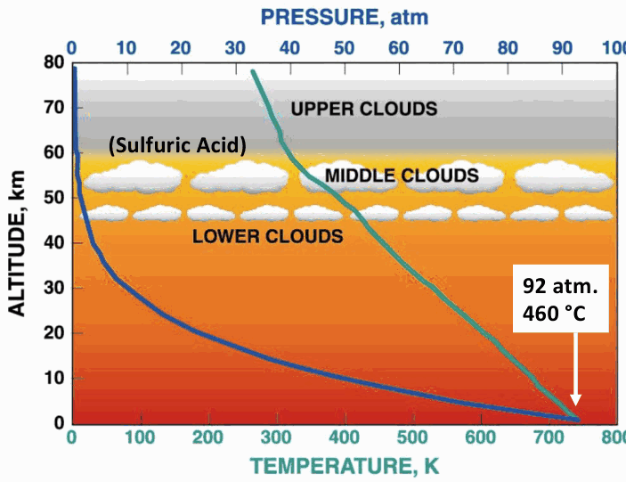
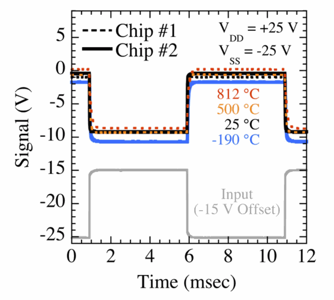
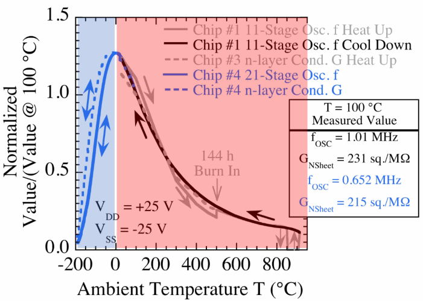

Module 17c
High-Temperature Electronics
Silicon carbide integrated circuits that run at 500 °C, and the places that need them: why electronics must sometimes sit in the heat, the surface of Venus, NASA's JFET-and-resistor circuit technology and the contacts, interconnect and packages it required, what still fails, and where the technology stands.
M17b ended with a choice of device: for circuits that must run for thousands of hours at 500 °C, NASA's Glenn Research Center chose the epitaxial n-channel JFET in silicon carbide, because it has no gate oxide, carries current by majority carriers and is built from p–n junctions in one of the most chemically stable semiconductor crystals. A transistor is not yet a circuit, and a circuit is not yet a working system. This module follows the rest of the chain: the circuit design that makes the transistor's temperature dependence cancel, the metal contacts, interconnect, dielectrics, bond pads and package that had to be made to survive the same temperature, what fails when they do not, and what the resulting technology can and cannot yet do. It also sets out why anyone needs it.
§1 explains where electronics must operate hot instead of being cooled or wired out of the heat, and §2 the sensors that sit in such places. §3 describes the surface of Venus, the hardest of them, and the test chamber that reproduces it. §4 sets out the JFET-and-resistor circuit approach and its operation from −190 to 812 °C, and §5 the contacts, interconnect, pads and package. §6 treats the failures that limit the technology today, chiefly cracks in its dielectric layers, §7 its present state and gaps, and §8 the one combination the course leaves open: radiation and high temperature together.
1 · Why electronics must run hot
Electronics are normally protected from temperature. A spacecraft's thermal design holds its boxes near room temperature (M03 §2, M17a §1), and on aircraft and in industry the electronics sit away from the heat, connected by wires to sensors that tolerate it. That approach fails in three ways: when the quantity to be measured exists only in the hot zone and changes too fast to be carried out of it, when the wiring out of the hot zone costs more weight and reliability than the electronics would, and when the cooling itself costs more than the electronics it protects. Silicon-on-insulator parts serve below about 250 °C, and the tutorial puts silicon's limit near 300 °C (Deck 16a pp. 4, 11; M17b §1). Beyond that range only wide-gap semiconductors have shown prolonged, stable operation: transistors of several materials, silicon-on-insulator among them, have worked above 450 °C for decades, but mostly in tests of about an hour on a heated probe station (Deck 16a p. 52). NASA's goal is long-duration operation at 500 °C or more, more than 200 °C above the practical SOI limit (Deck 16a p. 53).
An aircraft gas-turbine engine is the main terrestrial case (Deck 16a pp. 11–13). The gas leaves the compressor at several hundred degrees Celsius and the combustor at about 1,600 °C, and this is the gas that enters the turbine; it cools there as the turbine extracts work, passing 800 °C within it and leaving for the exhaust at roughly 450–500 °C. The compressor's later stages and the exhaust therefore lie beyond the reach of silicon. The engine adds a flame above 2,000 °C, metal parts above 1,100 °C, gas pressures above 40 bar, rotors 0.75 m across turning at 10,000 rpm with centrifugal accelerations of about 50,000 g at their rims, casing vibration above 100 g extending beyond 20 kHz, and more than 20,000 hours between services, about 2.3 years of running (Deck 16a p. 12, after Garg et al.). Ground testing of an engine uses typically about 1,300 wires to carry sensor data out of it; amplification, multiplexing and transmission at the point of sensing would improve the instrumentation while reducing the wires and connectors (Deck 16a p. 13).
Other applications follow the same pattern. Deep-well drilling telemetry for oil and gas needs about 300 °C, and geothermal wells about 600 °C; automotive sensors on the cylinder or in the exhaust about 600 °C; spacecraft power management 150–300 °C at chip powers above 1–10 kW (Deck 16a p. 48). At such powers cooling becomes a large share of the mass: in a 250 kW power converter for an aircraft, the thermal management that keeps the parts below 140 °C is a third of the mass, 8.4 of 25.4 kg, before the cooling loop is counted (Deck 16a p. 26). The industry guest of Lecture 15 added the point that matters for every one of these: a part's limit applies to its junction, which its own dissipation raises above the surrounding temperature.
Not every hot mission needs hot electronics. Parker Solar Probe, which passes closer to the Sun than any earlier spacecraft, relies on its heat shield and cooling, not on high-temperature electronics (Deck 16a pp. 42–43); its shield reaches about 980 °C in flight while the electronics behind it stay near room temperature (M03 §2). Deck 12 p. 19 and Lecture 16 give 1,300 °C, close to the shield's qualification limit of about 1,370 °C rather than to its flight temperature. The tutorial frames the goal as a capability rather than a technology: high- temperature electronics are worth flying where they perform the functions with the highest system impact in the harsh environment, provided they are affordable, customizable and reliable, including their packaging and electrical connections, and they are not intended to replace conventional electronics elsewhere (Deck 16a p. 44). Modest complexity suffices for that: Apollo flew integrated circuits of six transistors per chip, and Voyager crossed the solar system with chips of a few thousand (Deck 16a p. 45).
2 · Sensors that sit in the heat
The engine case shows why the sensor and its electronics must sit in the hot zone, and Lecture 16 discusses it in detail through pressure sensing for engine control. A compressor that surges or stalls loses its flow abruptly; detecting the pressure fluctuations that precede it, in time to open small bleed valves, would let designers remove the excess stages now built in as a margin. The sensors must resolve 0.02 psi on pressures up to 200 psi at temperatures up to 500 °C (Deck 16a p. 17).
Three mountings are possible (Deck 16a p. 18). A low-temperature sensor mounted remotely, at the end of a tube that carries the pressure out of the engine, loses the high-frequency content of the signal in the tube, and with it the early warning of instability. A low-temperature sensor mounted flush with the engine wall but liquid-cooled carries the weight and reliability cost of the cooling system, and the coolant flow interferes with the measurement. Only an uncooled sensor that itself tolerates the temperature can sit flush with the wall without either the tube's loss of signal or the cooling system's cost and interference, provided it is durable and stable over the engine's service life.
NASA Glenn's sensor (Deck 16a p. 19, R. Okojie) is a single chip of 4H-SiC with piezoresistors etched over a thinned diaphragm. A piezoresistor is a resistor whose resistance changes with strain: in a semiconductor, strain alters the band structure and with it the resistivity, an effect far larger than the geometric change of length and cross-section that a metal strain gauge relies on. The ratio of fractional resistance change to strain, the gauge factor, is below 2 for metals and 50–250 for silicon (Sze & Ng 2007, §14.3.1); silicon carbide's is smaller, about 10–30 in heavily doped material, still an order of magnitude above a metal's (Okojie et al. 1998; Akiyama et al. 2012). Pressure bends the diaphragm, the resistors on it strain, and a Wheatstone bridge of such resistors converts the change into a voltage proportional to the pressure and to the excitation voltage. At 10 V excitation the chip's output is linear in pressure from 25 to 800 °C. At 200 psi it gives about 11 mV at 25 °C, falls to about 6.5 mV near 300 °C and rises to about 17 mV at 700–800 °C. The slide gives no mechanism for that dependence on temperature, which the sensor's electronics must calibrate out.
The output is millivolts, and the slide adds that electronics to amplify it for transmission out of the hot zone are as vital as the sensor. A later version integrates a temperature sensor beside the pressure sensor on the chip, for real-time compensation at 800 °C, and attaches the chip directly with no wire bond (Deck 16a p. 20). Its package shows the materials rule of M17b §3 applied by design: every part in contact with the chip is chosen to expand nearly as it does (Deck 16a p. 21).
3 · The surface of Venus
Venus is the planet most like Earth in size, with 82 % of Earth's mass, and the one whose surface electronics have survived least: its landers returned hours of data where Mars landers return years (Deck 16a p. 32). The surface combines three extremes: temperature, pressure and reactive gases (Deck 16a p. 33).
The temperature is about 460–465 °C, day and night (M03 §2 uses 465 °C). The pressure is about 92 bar, some 91 atmospheres; the course slides round it to between 90 and 93 atm. The atmosphere is 96.5 % carbon dioxide and 3.5 % nitrogen, with sulfur dioxide at about 180 parts per million, carbonyl sulfide at 51, water vapour at 30, carbon monoxide at 12, hydrogen sulfide at 2, hydrogen chloride at 0.5 parts per million and hydrogen fluoride at 2.5 parts per billion (Deck 16a p. 33). The slide gives no source for these trace values. Apart from the water vapour, they are the recipe with which NASA Glenn fills its test chamber (below; Okojie et al. 2018), not a measurement at the surface: NASA's reference values for the lowest atmosphere are 150 ppm of sulfur dioxide, 20 of water vapour and 17 of carbon monoxide (NSSDCA Venus fact sheet). Above the surface the temperature falls and the pressure falls faster, through clouds of sulfuric acid between roughly 45 and 70 km.

The Soviet Venera landers of 1970–1982 set the record (Deck 16a p. 34). Venera 7 in 1970 sent a weak signal for 23 minutes after landing, the first data from the surface of another planet; Venera 8 lasted 50 minutes, Venera 9 and 10 53 and 65, Venera 11 and 12 95 and 110, Venera 13 127 and Venera 14 57 minutes. Several of the earlier probes were crushed by the pressure during descent. Some of those times are lower bounds (M03 §2). Venera 7 and 8 sent their signals straight to Earth, and Venera 8 succumbed to the surface conditions after 50 minutes. From Venera 9 on, an orbiter or a passing flyby spacecraft relayed the landers' data, and Venera 11 and 12 fell silent when the flyby spacecraft moved out of range, as the slide's own entries record; Venera 13 ran for 127 minutes against a design life of 32 (Siddiqi 2018). Their electronics were sheltered inside pressure vessels, the approach the tutorial calls environmental sheltering, and the heat leaking in set an upper limit on their surface life that the relay reached first for Venera 11 and 12.
The Venera durations in Lectures 15–16
The table on Deck 16a p. 34 gives Venera 13's surface time as 117 minutes; the mission records give 127 minutes, the figure M03 §2 uses. The lectures describe the landers as surviving about two hours because of the heat. Heat did end Venera 8's transmissions, after 50 minutes, but the table's own entries say that Venera 11 and 12 transmitted until their relay moved out of range, which ends the record without ending the lander; for Venera 13 and 14 the records give no cause.
The chemistry is the extreme that is hardest to reproduce. NASA Glenn's Extreme Environments Rig, GEER, is an 800-litre chamber that holds the main constituents of the Venus atmosphere, nine gases (the tutorial counts ten), at 460 °C and 1,350 psi absolute, about 93 bar, for runs of months (Deck 16a p. 37; Deck 16b p. 4). Its first lesson was that the full gas composition matters, down to the trace constituents: many common materials react, and they react by sulfidation instead of oxidation. A metal-alloy waveguide grew large sulfide crystals over 60 days in the chamber, and protecting parts by encapsulation proved difficult (Deck 16a p. 38). The test programme has since produced a handbook of how materials behave in Venus conditions.
| Use | Material | After exposure in GEER |
|---|---|---|
| Electronics packaging | Lead; alumina (Al₂O₃) | Lead forms PbS; alumina does not react |
| Insulation | CaO | Forms CaSO₃ and CaSO₄ |
| SiC electronics | Pt; Au; Ir; SiC; SiO₂ | Platinum forms PtS (fibres as a thin film, spheres when gold is present); gold and iridium do not react but are mobile; SiC and SiO₂ do not react |
| Feedthroughs | Cu; Ni; CuBe | Cu and CuBe form Cu₂S crystals, Ni forms NiS; chlorine also on the CuBe surface |
| SiC pressure sensor | Kovar; AlN; Ag–Cu braze | Kovar forms NiS and iron oxides; AlN does not react; the braze segregates into Cu₂S and mobile Ag |
| Chamber parts | Inconel 625; 304 stainless steel; Mg-doped Al foil | Inconel forms NiS and chromium oxides; the stainless steel keeps a mirror finish with a low corrosion rate; the foil grows an MgO surface over a magnesium fluoride inner layer, its aluminium bulk unreacted |
| New materials | Sputtered Al; Ti | Sputtered aluminium reacts with HF to AlF₃; titanium grows an oxide at its surface, decreasing into the bulk |
Most materials of NASA's chips survive: SiC and SiO₂ do not react, and gold does not react though it is mobile. Platinum, used in the chips' bond pads and in the boards' traces, forms a sulfide (Deck 16b p. 37, after Lukco et al. 2018).
Two ways of landing follow. The conventional one shelters the electronics: a 2009 NASA flagship concept carried them in a titanium pressure vessel 0.9 m across, insulated with silica, buffered by a lithium nitrate phase-change material and back-filled with carbon dioxide, for a 686 kg lander with 106 kg of payload, an hour of descent science and five hours of science on the surface (Deck 16a p. 36). Electronics that work at the ambient need no shelter, and a concept lander built on them would weigh under 20 kg and operate for more than 1,400 hours, against more than 500 kg and under 10 hours for the sheltered design (Deck 16a p. 40, after Kremic and Hunter). NASA's LLISSE probe (M03 §2) is the first step: a small lander built from silicon carbide electronics, aiming to operate for at least one Venus daylight period and the day–night transition, about 60 Earth days (Deck 16b p. 6). The 2020 flagship update would carry such a probe beside a conventional lander, as the technology demonstration needed before the approach replaces it (Deck 16a p. 41).
The silicon carbide circuits have already passed the chamber's test. Two NASA Glenn clock circuits of the tenth generation, each a selectable divide-by-two or divide-by-four oscillator of 175 transistors, ran for 60 days directly exposed to the simulated surface atmosphere, with no package lid, at 460 °C and 9.3 MPa; their output frequencies stayed steady near 85 and 40 kHz for the two settings of the select input (Deck 16a p. 39; Neudeck et al. 2019).
4 · Circuits from JFETs and same-layer resistors
M17b §5 showed that a single JFET can be biased so that its drain current does not drift, but only near cut-off, at a small fraction of its full current. NASA's circuits obtain their stability differently, from ratios: the transistor channels and the resistors are made in one layer, so a change of temperature scales them together. The approach is called JFET-R, for JFETs and resistors made together (Deck 16a p. 57; Deck 15 p. 35).
The resistors are strips of the same n-type epitaxial layer that forms the JFET channels, about 0.4 µm thick and doped about 10¹⁷ cm⁻³, with a shallow n-type implant at their surface, contacted at each end through the same N⁺ implants. A uniform layer has a sheet resistance Rsheet, the resistance of any square of it, in ohms per square, so a strip of length L and width W has R = Rsheet(L/W): the schematic's "30 sq." means a resistor thirty squares long. Because the resistors and the transistor channels are the same material, their conductances change with temperature in nearly the same proportion, through the same freeze-out and the same mobility (M17a §3–§4). The match is close but not exact, because a channel's conductance also depends on the depletion under its gate and from the back of the chip. A circuit whose output depends only on ratios of conductances in that layer then keeps its output while every individual resistance changes severalfold.
Lecture 16 makes the argument with a voltage divider. Two resistors in series across a supply V divide it in the ratio of their resistances.
As the temperature changes, both resistances are multiplied by the same factor, which cancels, and Vout does not move. Lecture 16 pictures a gate's transistor as a switch that connects or disconnects such a divider, with the output set by the resistor ratio and not by the transistor's current. That is a simplification. A conducting JFET is not a short circuit but a channel resistance in series with its load, one arm of the divider, and in the level shift below, the follower's gate–source voltage enters the output directly. The levels hold because the channels lie in the same layer as the resistors: a change of temperature multiplies every conductance in the gate, transistors included, by nearly the same factor, so every current changes by that factor and every voltage drop stays the same. The logic levels are therefore set by the layout's ratios of squares and channel widths, not by the absolute conductances.
The NOT gate shows the design (Figure 4). The input JFET, 24 µm wide and 6 µm long, has its source at ground and a 30-square load resistor to the positive supply; it inverts. Because the JFET is normally on and has a negative threshold, the logic levels are negative, roughly −1 V for a high and −10 V for a low, while the inverting stage's output lies at positive voltages. A second JFET of the same size, its drain at the positive supply, follows that node and drives a divider of 30 and 35 squares down to the negative supply, which shifts the output back down to the negative logic levels that the next gate's input needs. The supplies are typically +25 and −25 V, and the back of the chip is held at the negative supply (Deck 16a p. 57; Krasowski 2010).
An amplifier shows the effect most clearly (Deck 16a p. 58). A 100 µm × 10 µm 6H-SiC JFET carries about 2.3–2.5 mA at its top gate voltage at 25 °C and about 0.7 mA at 500 °C, a change of more than three times. An inverting amplifier built from such JFETs and resistors turns a 1 V peak-to-peak input into an output of about ±5.6 V, a gain of about 11, and the outputs at 25 and 500 °C lie on top of each other.
The tenth-generation NOT-gate design kept its logic levels from −190 °C on one chip to +812 °C on another, with the same supply and input voltages, a span of 1,000 °C: the high level stayed between about 0 and −2 V and the low level between about −9 and −11 V, the coldest run giving the most negative levels (Deck 16a p. 59; Deck 15 p. 37). The circuits start in the cold without difficulty, they can be screened for yield on the wafer at 25 °C, and 800 °C can serve as an accelerated test of a mission at 500 °C. On first heating to about 500 °C both levels drifted negative, by up to about 2.5 V, and recovered after a 144-hour burn-in at that temperature (Deck 15 p. 37; Neudeck et al. 2019).

The levels hold, but the speed does not. A gate's switching time is set by how fast its resistors and channels charge the next gate's capacitance, so the circuit frequency follows the conductance of the n-type layer (Deck 16a p. 60). Both peak near 0 °C. Below that, the nitrogen donors of 4H-SiC freeze out (M17a §3), and at −190 °C a 21-stage ring oscillator runs at about 5 % of its speed at 100 °C. Above it, phonon scattering lowers the mobility (M17a §4), and by 500 °C frequency and power have fallen four- to fivefold from their peak. At 100 °C an 11-stage oscillator runs at 1.01 MHz, and the layer's sheet conductance, 231 µS per square, makes each square about 4.3 kΩ, so a 30-square resistor is about 130 kΩ.

5 · Contacts, interconnect and the package
The transistor and the circuit approach were the easier parts. An integrated circuit also needs metal contacts to the semiconductor, wiring between thousands of devices, insulating layers between the wiring levels, bond pads and a package, and in a conventional chip none of these is designed for 500 °C. Lecture 16's summary of NASA's experience is that silicon carbide itself is excellent and that the metals and insulating layers generate most of the problems.
Ohmic and rectifying contacts
A metal placed on a semiconductor forms a potential barrier at the interface. If the barrier controls the current, the contact rectifies, as the Schottky gate of a MESFET does (M17b §6). An ohmic contact is one whose resistance is negligible against the device it connects and which passes current in either direction. It is made by doping the semiconductor so heavily beneath the metal that the barrier becomes thin enough for carriers to tunnel through; the figure of merit is the specific contact resistance, in Ω·cm². On a wide-gap semiconductor ohmic contacts are hard to make, because no metal gives a low enough barrier, so heavy doping does most of the work (Sze & Ng 2007, §3.6). NASA's chips contact the n-type layer through heavily implanted N⁺ regions.
The tenth-generation interconnect (Deck 16a p. 61) uses the following materials. The first dielectric is a 30 nm thermally grown oxide under 1 µm of deposited SiO₂. In its openings the ohmic contacts, 50 nm of titanium under 0.2 µm of tantalum disilicide, TaSi₂, sit on implanted SiC, and the first wiring level, Metal 1, runs down onto them. The two wiring levels, each 0.8 µm of TaSi₂, are separated by 1 µm of SiO₂, and two more 1 µm oxide layers cover Metal 2, with a 67 nm layer of silicon nitride, Si₃N₄, between them (Neudeck et al. 2018). The deposited oxide, made from tetraethyl orthosilicate, and the nitride are laid down by low-pressure chemical vapour deposition at 720 °C. Every piece of interconnect is buried beneath dielectric, because TaSi₂ exposed to air at 500 °C oxidizes. The transistor beneath is the structure of M17b §6 in 4H-SiC: an n-type channel about 0.4 µm thick at 10¹⁷ cm⁻³ under a p⁺ gate doped above 10²⁰ cm⁻³, on a 6–8 µm p-type layer below 5×10¹⁵ cm⁻³.
The bond pads are the "iridium interfacial stack", IrIS: 0.2 µm of platinum, 0.3 µm of iridium and 0.2 µm of platinum over 0.4 µm of TaSi₂, anchored directly to the SiC and capped with 1 µm of gold. The buried interconnect never touches it; N⁺-implanted SiC connects each pad to Metal 1, adding about 100 Ω in series (Deck 16a p. 63). Each chip is mounted with a gold thick-film die attach, fired at 600 °C, in a package of co-fired alumina with platinum conductors and 32 input and output connections; 25 µm gold wires are ball-bonded to the chip's pads and wedge-bonded to the package's gold-over-platinum pads, and the package is mounted on an alumina circuit board (Deck 16a p. 62; Spry and Lukco 2012; Chen et al. 2016). Annealing tests found the first clear structural limit of the pad stack just above 700 °C (Deck 16a p. 64). Unpackaged, non-working chips of an earlier version were each given a single 30-minute anneal in nitrogen or in forming gas, 4 % hydrogen in nitrogen (Spry and Neudeck 2021). After 500 °C the stack had separated into planar layers of TaSi₂ against the SiC, then PtSix, iridium and platinum. At 700 °C the silicide zone thickened and, under a gold cap, oxygen collected at the gold–platinum interface, which could become a bonding failure point if the gold of the ball bond were too thin to block it. By 900 °C platinum had reached the SiC, with voids.
Short tests at higher temperature show where the next limit lies (Deck 16a p. 65; Neudeck et al. 2017). A 48 µm × 6 µm JFET's ratio of on-current to off-current fell from more than 10⁶ at 27 °C to 1.1×10⁵ at 501 °C, 2,200 at 708 °C, 320 at 803 °C, 13 at 913 °C and 8.7 at 961 °C, and an 11-stage ring oscillator still ran at 961 °C. Above about 500 °C the leakage through the package, the leakage of the Metal-1 wiring and the JFET's measured off-current coincide, rising from a noise floor of 10⁻¹⁰ to 10⁻⁹ A to about 10⁻⁵ A near 850 °C: what is measured as the off-current there is the package's leakage. The package, designed for 500 °C, was the limiting factor, and the intrinsic limit of the JFET circuits has not yet been measured.
6 · What fails, and how it is found
A technology meant for a mission must show not only that it works but how and when it fails, and with enough samples to estimate the risk. NASA's tenth-generation circuits were tested packaged, in ovens at 500 °C, and the record is short enough to give in full.
| Packaged IC | r (mm) | Time at 500 °C | Status |
|---|---|---|---|
| RAM #1 | 13.4 | 63 days | Suspended |
| RAM #2 | 6.7 | 420 days | Running |
| Clock #1 | 24.2 | 19 days | Failed |
| Clock #2 | 15.3 | 437 days | Running |
| Clock #3A | 12.4 | 403 days | Running |
| Clock #3B | 12.4 | 403 days | Running |
| Clock #3C | 13.4 | 87 days | Failed |
Deck 16a p. 68 (Table I, after Neudeck et al. 2018). r is the die's distance from the centre of the 76 mm wafer. The epitaxial layers were not uniform, so the JFET threshold varied with r, from −7.9 V at the centre to −13.8 V at the edge at a substrate bias of −15 V, and only dies within 25 mm of the centre met the circuit-design limits. Two of seven failed, both suddenly and unpredictably, as open circuits, and the tutorial calls the resulting random failure risk unacceptable for missions. RAM #1 did not fail: its test was stopped to free its oven for RAM #2. The table is the whole oven-test data set for these complex circuits, and the tutorial notes that much larger numbers are needed to meet the statistics of aerospace qualification.
The failure analysis began with the simplest method, an optical microscope. The failed clock showed cracks in its dielectric layers and discoloured, oxidized metal traces; where a crack exposed the TaSi₂ wiring to air at 500 °C, the wiring oxidized through and opened the circuit (Deck 16a p. 68; Deck 15 p. 40). The cracks are attributed to stress in the films of stacks that contain silicon nitride. Chips without nitride showed no dielectric cracks even after 30-minute anneals at up to 1,370 °C; cracks appeared in the generations that added Si₃N₄ as a barrier to oxygen and mobile ions (Spry and Neudeck 2021). The dielectrics are deposited at 720 °C, above the operating temperature, so that their stress is greatest near room temperature rather than in service, and dicing, handling and bonding can start a crack (Spry et al. 2020).
NASA then varied the stack. Unpackaged chips were cycled ten times, for 10 h each, to 720 °C in air. Version 10.2, with one 67 nm nitride layer above Metal 2, and version 11.1, whose Metal 2 was deposited by high-power impulse magnetron sputtering, both cracked, and their TaSi₂ oxidized beneath the cracks; version 11.2, with a second nitride layer between Metal 1 and Metal 2, showed no dielectric cracks and no oxidation (Deck 15 p. 41; Spry et al. 2020). The cycling result is not the whole record. Version 10.2 is the process whose circuits ran for more than a year at 500 °C; generation 11 did not reach generation 10's prolonged operation and yield; and the 11.2 chips failed their probe test at 25 °C, because Metal 2 cracked open wherever it crossed the steps of underlying mesas and Metal 1 lines (Neudeck et al. 2023). A later series built six back-end interconnect stacks, one on each of six practice SiC wafers, and counted cracks optically on each 5 mm × 5 mm die of one quadrant of each wafer. Nearly all the cracks formed when the topmost nitride was deposited. The sixth stack had the fewest, all at the wafer edge, and the highest yield at electrical probe test, with dicing, packaging and oven tests still to follow (Deck 16a pp. 69–70; Neudeck et al. 2023). Etching through the dielectric to bare SiC between dies, and a Metal-1 "fence" that deflects cracks from neighbouring devices, also limit the damage (Spry et al. 2020). Deck 15 p. 42 adds a wafer map of low yield from metal delamination.
Qualification for long life at 500 °C has to extend decades of aerospace and automotive practice to a new temperature range: parallel tests in numbers enough for statistics, on chips, packages and multi-chip boards; acceleration by temperature and by voltage or current; repeated thermal cycling and shock; vibration at temperature; and failure mechanisms documented across the intended environment (Deck 16a p. 66). Towards the first of these, NASA Glenn is building small ovens, each taking a chip, with or without its package, on a ceramic board inserted through a slit, with the goal of 50 or more circuits tested in parallel with rapid thermal cycling (Izadnegahdar et al. 2021). Accelerated testing and failure analysis are the subject of M19.
7 · Where the technology stands
The circuits have grown from single gates to small systems. A clock chip, whose 21-stage ring oscillator ran at about 165–170 kHz with outputs divided by two and by four, operated at 500 °C for 437.5 days, and after its first 100–200 hours its outputs changed by less than 5 %. A 16-bit memory operated for a year at 500 °C; its output levels, about +0.5 and −9.2 V, lay beyond the −1 V and −9 V levels applied to its inputs, so one chip could drive the next (Deck 15 pp. 38–39; Neudeck et al. 2018). The memory grew from 16 bits in 2017 to 120 bits, about 1,000 transistors on a 4.65 mm square chip (Deck 15 p. 43; Deck 16b p. 14). The twelfth generation, in fabrication in 2023, comprises 50 circuit designs, among them a microprocessor on two chips, 8-bit analog-to-digital and digital-to-analog converters, a 2-kbit mask-programmed read-only memory and a 248-bit memory, control and conversion circuits for a Venus lander, a dozen sensor amplifiers, power JFETs, and chips designed by outside partners (Deck 16a p. 71).
The microprocessor uses a transport-triggered architecture with sixteen instructions, from logic operations to jumps and subroutine calls, acting on one result register, programmed through its own assembler, logic simulator and memory programmer; it dissipates 1.3 W at 460 °C in circuit simulation (Deck 16a p. 75). A public design guide provides SPICE models and layout rules, and the thirteenth generation shrinks the NOT gate from 11,021 to 3,016 µm², 3.65 times smaller (Deck 16a p. 72).
The tutorial lists the gaps plainly (Deck 16a p. 77). The JFET-R circuits run at a few megahertz at most, and radio transmitters at 100 MHz and above will need other devices, such as SiC bipolar transistors. The JFETs are normally on, which suits them poorly to power switching, and no package for kilovolts and tens of amperes at 500 °C has been shown. The logic needs more than ten times the power of CMOS. Memory demonstrated at 500 °C is below 1 kbit per chip, with storage power of milliwatts per bit, read-only memory fixed by the mask and no electrically programmable non-volatile memory; the twelfth generation's 2-kbit read-only memory is still a design in fabrication. There is no quartz-like timing reference: the ring oscillators hold their frequency to within 10 % over time at one temperature, but nothing references it, and it falls four- to fivefold between 25 and 500 °C (§4). Other devices, among them implanted JFETs, SiC CMOS, bipolar transistors, III-nitride FETs and gallium oxide, would bring benefits if and when they show prolonged stable operation at 500 °C and can be integrated with durable interconnect and packaging (Deck 16a p. 78).
NASA's HOTTech programme, Hot Operating Temperature Technology, funds technology for hot planetary surfaces, chiefly that of Venus. The table lists the twelve tasks of one round, among them NASA Glenn's own high-temperature memory (Deck 16b p. 7). Deck 16b p. 3, like several NASA Glenn papers, expands the acronym as High Operating Temperature Technology.
| Area | Task | Organization |
|---|---|---|
| Packaging | 500 °C, weather-resistant electronics packaging | University of Arkansas |
| Clocks and oscillators | Passively compensated low-power chip-scale clocks for wireless communication | Stanford University |
| GaN electronics | High-temperature GaN microprocessor | Arizona State University |
| Computer memory | High-temperature memory for long-lived Venus missions | NASA Glenn |
| Diamond electronics | High-temperature diamond electronics for actuators and sensors | Arizona State University |
| Vacuum electronics | Field-emission vacuum devices above 500 °C | Boeing |
| ASICs and sensors | SiC electronics for long-lived chemical sensing at the surface | Makel Engineering |
| Primary batteries | High-temperature, long-life primary batteries for Venus and Mercury | NASA JPL |
| Rechargeable batteries | Lithium–sulfur battery for extreme temperature | University of Dayton |
| Solar power | Low-intensity, high-temperature solar cells | NASA JPL |
| Power generation | Lithium-combustion in-situ power system | Johns Hopkins APL |
| Electric motors | TRL-6 electric motor and position sensor | Honeybee Robotics |
8 · Radiation and high temperature together
The course treats radiation and temperature as separate stresses, and so does most of the testing behind it. They meet in two places. The first is silicon carbide power devices, the other main use of the material. A heavy ion crossing a SiC power MOSFET or diode under high voltage can trigger single-event burnout, a destructive current along its track. In a simulation of a 1,200 V MOSFET blocking 500 V, struck by a silver ion of LET 46 MeV·cm²/mg, the ion's carriers move the peak of the field, about 3.5×10⁶ V/cm, to the interface between the epitaxial layer and the substrate within 50 ps. Impact ionization there (M01 §6) heats the lattice locally, to roughly 1,600 K by 120 ps while the rest of the track stays below about 1,200 K. The simulation counts the device as burnt out once any point reaches 3,000 K, and the simulated device fails when blocking between 475 and 500 V (Deck 16a p. 30, after McPherson et al. 2019). Measured burnout thresholds fall from about 1,100 V at low LET to a plateau near 500 V for LETs from about 10 to 65 MeV·cm²/mg, and degradation begins lower still, near 230–400 V (Ball et al. 2020). A 1,200 V device is considered safe to fly only below 200 V, a de-rating that removes much of the material's advantage for spacecraft power. The energy deposition behind such events is that of M13 §10, and single-event effects are the subject of M15.
The second is the circuit of this module in a radiation environment, where it has been tested at room temperature (Lauenstein et al. 2019). A total ionizing dose of 7 Mrad(Si) of gamma rays changed the JFETs' IDSS by less than 1.5 % and their pinch-off voltage by less than 2 %, but raised a "hump" of extra current in the subthreshold part of the transfer curve, which faded after two weeks unbiased and returned under bias; the paper assigns it no cause. The gain of the operational amplifiers fell with dose, by up to 21 %. Heavy ions up to an LET in silicon of 86 MeV·cm²/mg caused no destructive event. The clock chip showed upsets and transients, none with neon at 3.5 MeV·cm²/mg but some with argon at 9.7 MeV·cm²/mg and heavier ions, which the authors trace to its control logic. Lecture 16 names the combination of radiation and high temperature as an open question, and it remains unmeasured. The pieces are in hand. Heat speeds the annealing of trapped oxide charge, though not of interface traps, which keep forming after an exposure (M14 §6). In silicon much displacement damage anneals (M11 §8), but silicon carbide's main vacancy-type defects survive anneals to about 1,500 °C (Danno and Kimoto 2006), so operation at 500 °C does not remove them. Heat raises every junction's leakage (M17a §5), and the JFET-R circuits have no gate oxide but do have field and interlevel dielectrics in which charge can be trapped (M17b §6). How these combine in a hot, irradiated circuit is the question the lecture leaves open.
Summary
- Electronics must run hot where the signal exists only in the hot zone, where wiring out costs too much, or where cooling does: engine compressors and exhausts (combustor exit ≈ 1,600 °C; about 1,300 test wires), drilling at 300–600 °C, power conversion (cooling a third of a 250 kW converter's mass), Venus. SOI reaches about 250–300 °C; beyond it only wide-gap devices have shown long, stable operation.
- A flush-mounted SiC piezoresistive pressure sensor works from 25 to 800 °C (at 200 psi, ≈ 11 mV at 25 °C, ≈ 6.5 mV near 300 °C, ≈ 17 mV at 700–800 °C with 10 V excitation); its package matches expansion: SiC 3.7, AlN and glass 4.1, Kovar 5.1–6.2 ppm/°C.
- Venus: 460–465 °C, 92 bar (≈ 91 atm), 96.5 % CO₂ with sulfur gases; materials sulfidize. Venera landers returned 23–127 minutes of surface data; Venera 8 failed in the heat, Venera 11 and 12 lost their relay. GEER reproduces the surface in 800 L at 460 °C and 1,350 psi absolute; two SiC clock ICs ran 60 days in it in unlidded packages.
- JFET-R: resistors made in the same n-type layer as the JFET channels change with temperature in nearly the same proportion as the channels, so ratio-based circuits hold their outputs. One NOT-gate design kept its levels from −190 °C (one chip) to +812 °C (another) at ±25 V supplies; an amplifier's gain of about 11 is the same at 25 and 500 °C though its JFET's current falls more than threefold.
- Speed follows the n-layer's conductance: highest near 0 °C, about 5 % at −190 °C (freeze-out), down four- to fivefold by 500 °C (phonon scattering). Sheet conductance 231 µS/□ at 100 °C, ≈ 4.3 kΩ per square.
- Ti/TaSi₂ ohmic contacts and two TaSi₂ wiring levels buried in SiO₂, with Si₃N₄ above Metal 2; gold-capped IrIS pads reached through N⁺ SiC; gold die attach and gold wire bonds in a co-fired alumina package with platinum conductors. The pad stack's first structural limit is just above 700 °C; above 500 °C the package's leakage, not the JFET, set the measured off-current, and ION/IOFF fell from > 10⁶ at 27 °C to 8.7 at 961 °C.
- Dielectric cracks cause sudden open circuits: two of seven packaged ICs failed, at 19 and 87 days at 500 °C; four were still running after 403–437 days, and one test was stopped at 63 days to free its oven. The cracks came with the Si₃N₄ added against oxygen and mobile ions, from film stress; a second nitride layer, etching to bare SiC between dies and a Metal-1 fence reduced them, and the best of six stacks cracked only at the wafer edge.
- Gen 12, in fabrication: 50 circuit designs including a two-chip microprocessor (1.3 W at 460 °C, simulated), converters and memories; Gen 13 shrinks the NOT gate 3.65-fold. Gaps: a few MHz, normally-on devices, more than ten times CMOS power, under 1 kbit of demonstrated memory per chip, no frequency-referenced clock.
- SiC power devices must be de-rated for single-event burnout (a 1,200 V part flown below 200 V). At room temperature the JFET-R circuits took 7 Mrad(Si) and heavy ions to LET 86 MeV·cm²/mg without a destructive event; radiation and high temperature together remain unmeasured for them.
Where this came from
| Opening | M17b §6; Deck 16a pp. 53–56; Lecture 16 |
| §1 | Deck 16a pp. 4, 10–13, 26, 42–45, 48, 52–53; Deck 12 p. 19 and Lecture 16 for Parker's 1,300 °C (P. G. Neudeck, NASA Glenn, ICSCRM 2023 tutorial, a work of the US Government; the engine environment after S. Garg et al., NTRS 20100029602; the application table after P. G. Neudeck, R. S. Okojie and L.-Y. Chen, Proc. IEEE 90, 1065 (2002)); Lecture 15 (the industry guest); Parker Solar Probe from M03 §2 |
| §2 | Deck 16a p. 17 (after S. Garg et al., NTRS 20100029602 and 20130013439), p. 18, and pp. 19–21 (R. Okojie, NASA Glenn), with Lecture 16; the mounting comparison as cited on p. 18, Case Stud. Therm. Eng., doi:10.1016/j.csite.2022.102184; piezoresistance and the gauge factor from S. M. Sze and K. K. Ng, Physics of Semiconductor Devices, 3rd ed. (Wiley, 2007), §14.3.1; SiC gauge factors from R. S. Okojie, A. A. Ned, A. D. Kurtz and W. N. Carr, IEEE Trans. Electron Devices 45, 785 (1998), and T. Akiyama, D. Briand and N. F. de Rooij, J. Micromech. Microeng. 22, 085034 (2012) |
| §3 | Deck 16a pp. 31–41; Deck 16b pp. 3–6, 37 (G. W. Hunter and T. Kremic, NASA Glenn), the materials table after D. Lukco et al., Earth Space Sci. 5, 270 (2018); Deck 12 pp. 17–19; Figure 3 modified from E. Kolawa et al., JPL D-32832 (2007); the gas table's values as GEER's fill recipe, R. S. Okojie et al., "Silicon carbide pressure sensors for Venus environment", International Planetary Probe Workshop (2018), NTRS 20180005551; pressure and near-surface composition from the NSSDCA Venus fact sheet; Deck 16b p. 4 for GEER's nine gases; the Venera landers' links and lifetimes from A. A. Siddiqi, Beyond Earth: A Chronicle of Deep Space Exploration, 1958–2016, NASA SP-2018-4041 (2018); the 60-day test, P. G. Neudeck et al., IEEE J. Electron Devices Soc. 7, 100 (2019); Venera 13's 127 minutes and the relay limit from M03 §2; the lander comparison after T. Kremic and G. W. Hunter, doi:10.3847/25c2cfeb.cb6775e1 |
| §4 | Deck 16a pp. 57–60 and Deck 15 pp. 35–37, with Lecture 16 (the voltage-divider argument); M. J. Krasowski, US Patent 7,688,117 (2010); P. G. Neudeck et al., "Demonstration of 4H-SiC JFET digital ICs across 1000 °C temperature range without change to input voltages", Mater. Sci. Forum 963, 813 (2019), and NTRS 20190027358; the amplifier after NTRS 20130000502. Sheet resistance per square computed here from the conductance on p. 60 |
| §5 | Deck 16a pp. 57, 61–65 and Lecture 16. The stack after P. G. Neudeck et al., IMAPS HiTEC 2018, pp. 71–78 (NTRS 20180003391). Ohmic contacts: Sze & Ng (2007) §3.6. Pads and packaging: D. Spry and D. Lukco, J. Electron. Mater. 41, 915 (2012); L.-Y. Chen et al., "Electrical performance of a high temperature 32-I/O HTCC alumina package", IMAPS HiTEC 2016, pp. 66–72; the anneal study after D. Spry and P. Neudeck, CS MANTECH 2021. Above 900 °C: P. G. Neudeck et al., "Demonstration of 4H-SiC digital integrated circuits above 800 °C", IEEE Electron Device Lett. 38, 1082 (2017); the slide cites it with the year 2016 and the DOI of D. J. Spry et al., IEEE Electron Device Lett. 37, 625 (2016) |
| §6 | Deck 16a pp. 66–70 and Deck 15 pp. 40–42, with Lecture 16. Table I and the wafer-radius data: P. G. Neudeck et al., IMAPS HiTEC 2018, pp. 71–78. The crack failures: D. J. Spry et al., IMAPS HiTEC 2016, pp. 249–256; no cracks without nitride, and the deposition temperature, from D. Spry and P. Neudeck, CS MANTECH 2021. The cycling study and the mitigations: D. J. Spry, P. G. Neudeck and C. W. Chang, Mater. Sci. Forum 1004, 1148 (2020). The back-end study and the fate of generation 11: P. G. Neudeck et al., "Recent progress in extreme environment durable SiC JFET-R integrated circuit technology", IMAPS HiTEC 2023 (NTRS 20230002648). The oven set-up: A. Izadnegahdar et al., IMAPS HiTEC 2021 (NTRS 20210011676) |
| §7 | Deck 16a pp. 71–78; Deck 15 pp. 38–39 (after Neudeck et al. 2018), 43; Deck 16b pp. 3, 7, 14; the twelfth generation's status and memory sizes from Neudeck et al. 2023; the oscillators' temperature dependence from §4 |
| §8 | Deck 16a p. 30: the simulation after J. A. McPherson, C. Hitchcock, T. P. Chow, W. Ji and A. A. Woodworth, poster, NTRS 20190033217 (2019), and the thresholds after D. R. Ball et al., IEEE Trans. Nucl. Sci. 67, 22 (2020). The room-temperature tests: J.-M. Lauenstein et al., "Room temperature radiation testing of a 500 °C durable 4H-SiC JFET integrated circuit technology", IEEE Radiation Effects Data Workshop (2019), NTRS 20190031951. Defect stability in SiC: K. Danno and T. Kimoto, J. Appl. Phys. 100, 113728 (2006). Lecture 16 (the open question); M01 §6, M11 §8, M13 §10, M14 §6, M17a §5, M17b §6 |